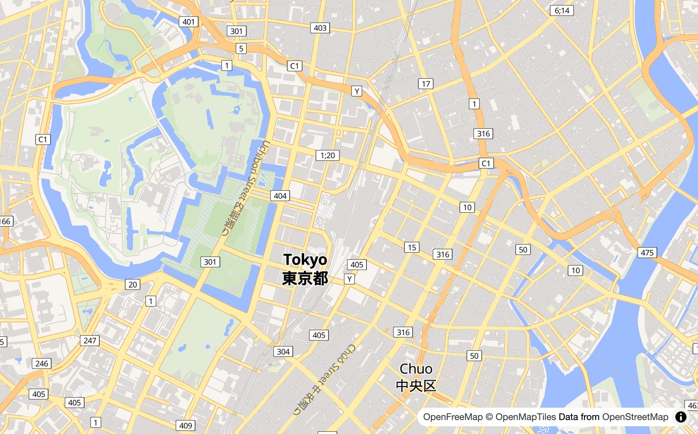
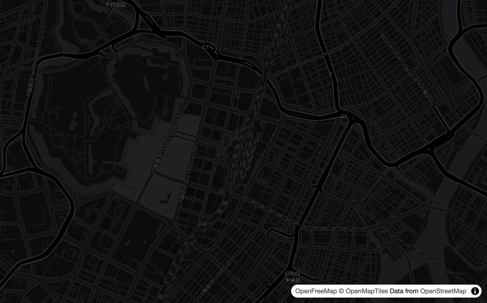
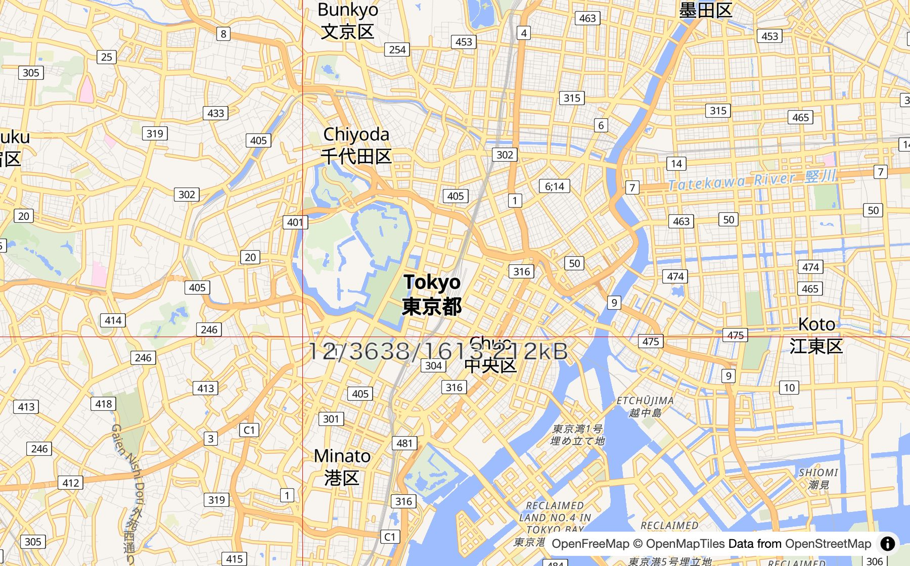
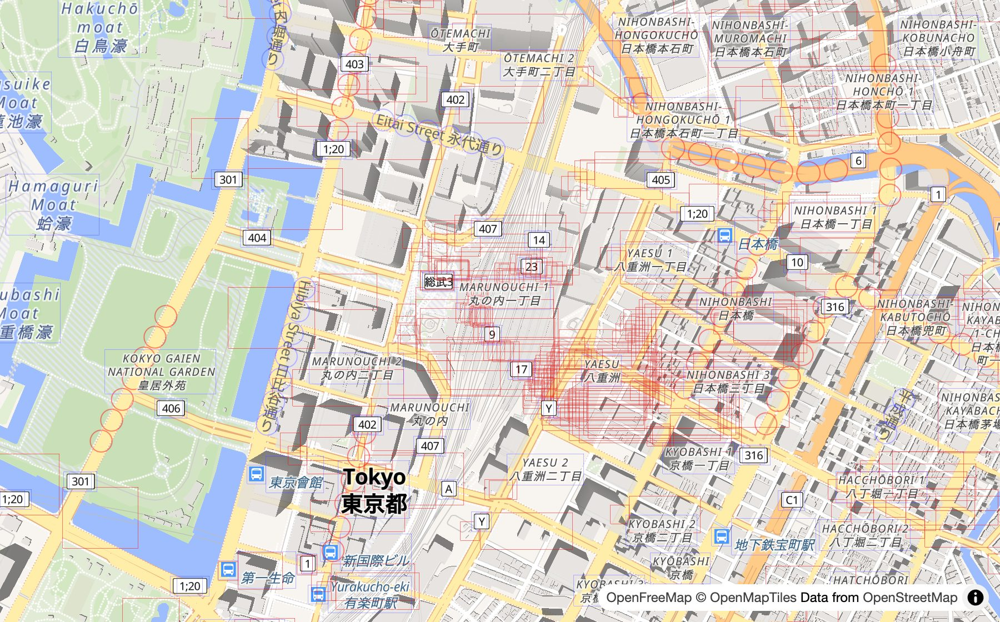
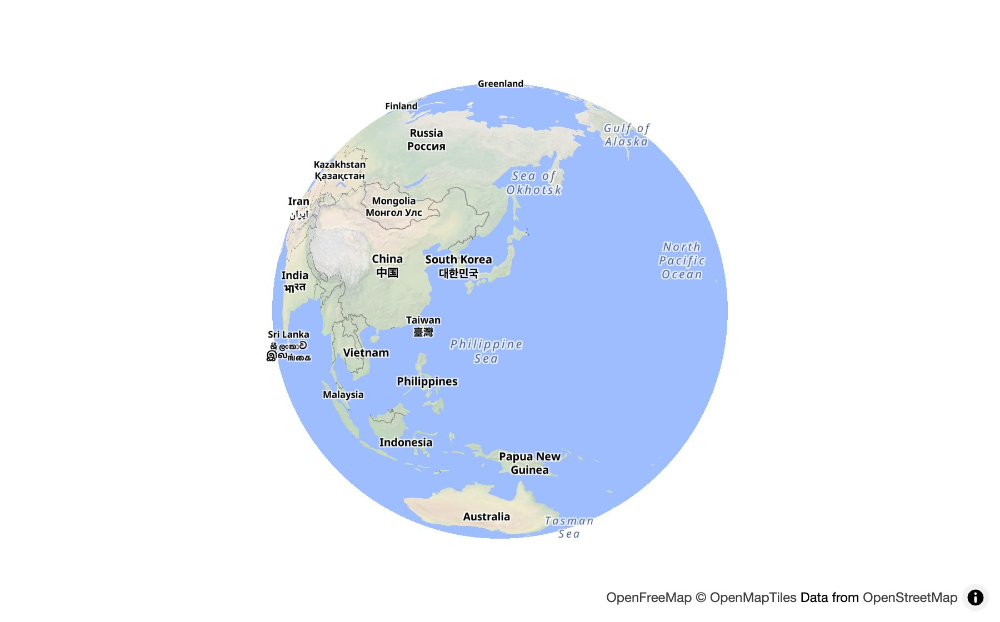
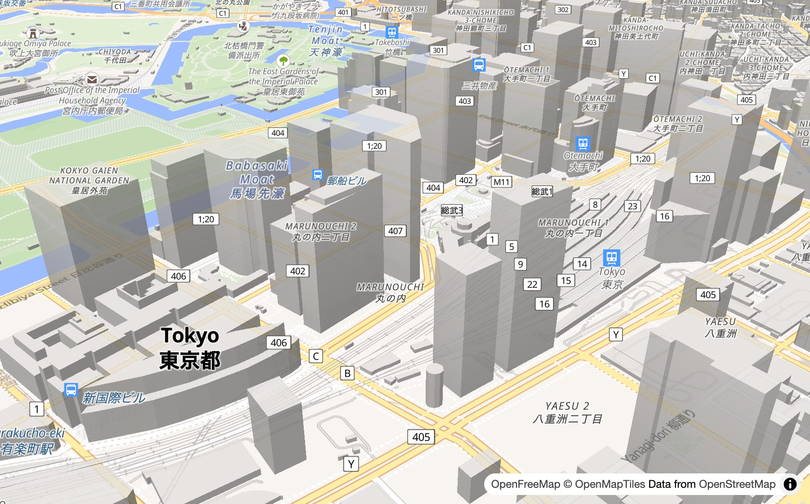
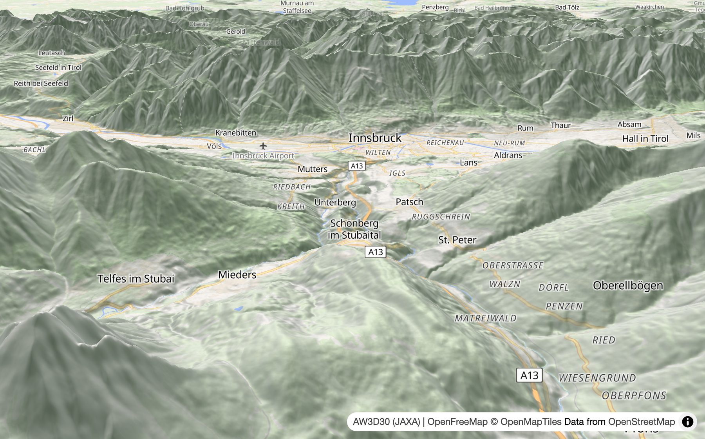

非公式の解説資料ですこの資料は MapLibre の公式資料ではありません。オープンソースで公開されている maplibre/maplibre-gl-js のソースコードを、個人が読んでまとめたものです。内容の正確さは保証できず、最新のコードと違う場合があります。
MapLibre GL JS の中身をのぞいてみよう
指で動かせる地図は、どうやって画面に出ているのか。絵と図で見ていきます。
01
何をするライブラリ？
スマホの地図のように、指で動かせる地図を Web ページに出すライブラリ（便利な関数の集まり）です。
✍️ 使う人が書くこと
- 地図を出す場所
- どんな色で描くか（スタイル）
- 最初に見せる場所
🤖 MapLibre がやること
- 地図のデータを集める
- 読み解いて形にする
- 1秒に最大60回描き直す
- 文字が重ならないように選ぶ
同じデータでも、スタイルを変えると別の地図になる


02
全体の地図
仕事をするのは、ブラウザの中の3人の係です。
🧑💼表の係（メインスレッド）
画面と操作の担当。ここが重い計算で止まると、地図がカクカクする👷裏方（Web Worker）
画面にはさわれないが、表の係と同時に計算できる🎨GPU
三角形を何万個も同時に塗れる。WebGL2 で使う💬 係どうしはメッセージで話す
{type: 'LT', data: …} のような手紙を送り合います（LT = loadTile）。手紙の種類は23個です。
03
プログラムの役割分担
工場のラインのように、左から右へ仕事が流れます。
🕹️
受付Controllerui/📒
決まりを持つModelstyle/📦
タイルを集めるModelsource/ tile/✂️
形に切るModel（裏方で）data/ symbol/🖌️
塗るViewrender/ webgl/MVC で言うと
操作を受ける Controller、データを持つ Model、画面に描く View の3つに分かれています。
📁 src/ のフォルダ
Controller入口・操作を受けるModelデータと状態View画面に描く共通道具箱
📁 src/
- 🕹️ ui/地図・カメラ・ボタン・指の操作
- 🌐 geo/緯度経度、平らな地図と地球儀
- 📒 style/スタイルとレイヤー
- 📦 source/データの出どころ、裏方の入口
- 🧩 tile/タイルの出し入れ
- 🔺 data/三角形の配列（Bucket）
- 🔤 symbol/文字の並べ方、重なりの判定
- 🖌️ render/描く順番を決める
- 🎛️ webgl/GPU とのやりとり
- ✨ shaders/GPU で動くプログラム
- 🧰 util/通信・メッセージなどの道具箱
04
地図が表示されるまで
地図を開いてから、絵が出るまでの順番です。
メイン🗺️ new Map() を実行
メイン📄 style.json をダウンロード
メイン🔍 画面に入るタイルを選ぶ
もう持っている？
はい
♻️ 使い回す
いいえ
ワーカー👷 裏方に「用意して」届くまでは1つ手前のズームのタイルで代用
メイン🏷️ 文字ラベルを選ぶ
GPU🎨 GPU が描く
まだ動いている？ 読み込み中？
はい
↻ 次の画面で「タイルを選ぶ」から1秒に最大60回
いいえ
😴 'idle'（ひと休み）
05
タイルと裏方の仕事
世界地図を正方形のタイルに切って、見ている所だけ取りに行きます。

🧩 タイルの中身は「絵」ではなく「座標」
👷 裏方の仕事の順番
⬇️
ダウンロードfetch🔎
読み解くMVT / MLT🗂️
仕分けるレイヤーごと🔺
三角形にBucket🔤
文字を並べるフォントは表の係にもらう📮
送り返すコピーせずに渡す06
GPU で描くしくみ
GPU は三角形を塗るのが得意。だから形は全部、三角形に切ります。
🥞 レイヤーを下から重ねる
✨ GPU の中の2つのプログラム（シェーダー）
📍
頂点シェーダー三角形の角を、画面のどこに置く？🖍️
フラグメントシェーダー1ピクセルを何色にする？🖼️
画面に出る07
文字ラベルの席取りゲーム
文字が重なると読めないので、席取りゲームをします。
メイン📋 ラベルを大事な順に並べる
1つずつ
席は空いている？
はい
✅ 表示して席を取る
いいえ
重なってもいい設定？
はい
✅ 重ねて表示
いいえ
💤 今回はお休み地図が動いたら、またチャレンジ

⏱️1回2ミリ秒まで
終わらなければ次の画面に続きを回す🌫️ふわっと出し入れ
0.3秒かけてフェード08
動かす・丸くする・立てる
指で動かす、地球を丸くする、山を立てる。
👆 指の動きがカメラの動きになるまで
👆
指が動くtouchmove など🧑💼
係が読みとるパン・ズーム・回転➕
まとめる1フレーム分を足し算🎥
カメラが動く🛝
すべって止まる慣性🌍 平らな地図 ⇄ 丸い地球



09
データのつながり
2つのデータが、名前でつながっています。
🔵source
どのサーバーのタイル？🟢source-layer
タイルの中のどの層？🎨paint
どんな色・太さ？10
使っている道具
ブラウザで動くのに必要な外部ライブラリは18個だけ。
✍️ 書く
TypeScriptGLSL
🌐 ブラウザ
WebGL2Web Workerfetch
🧩 データ
vector-tileMLTgeojson-vt
🔺 形と文字
earcuttiny-sdfbidi-js
🧪 テスト
VitestPuppeteerESLint
📦 配る
rolldownnpmGitHub Actions
11
ミスを防ぐしくみ
直しを送るたびに、ロボットが全部チェックします。
1,723🖼️ 描画テスト
正解の画像と見比べる
正解の画像と見比べる
219🧪 ユニットテスト
のファイル
のファイル
136🔍 検索テスト
クリックで正しく探せる？
クリックで正しく探せる？
14⏱️ 速さの測定
🤖 チェックの順番
📮
直しを送るプルリクエスト📏
書き方・型ESLint・tsgo🧪
テストユニット・描画・ビルド👀
人が読むレビュー✅
取りこむマージ✋見なくなったタイルは取り消す
通信がつまらないように🗑️古いタイルから捨てる
メモリを使いすぎないように🔍スタイルの書きまちがいを知らせる
地図が真っ白にならないように🔁GPU が戻ったら描き直す
ほかのアプリに GPU を取られても12
用語集
- ライブラリ
- だれかが作った便利な関数の集まり
- タイル
- 地図を正方形に切った1枚
- ベクタータイル
- 点・線・面の座標が入ったタイル
- スタイル
- 色や太さの決まりを書いた JSON
- レイヤー
- 重ねて描く1枚1枚の層
- メインスレッド
- 画面と操作を受け持つ、表の係
- Web Worker
- 同時に計算できる、裏方
- GPU
- 三角形をたくさん同時に塗れる装置
- シェーダー
- GPU の中で動く小さなプログラム
- フレーム
- 画面1回分の絵。1秒に最大60回
- キャッシュ
- 作ったものを取っておいて使い回すこと
- イベント
- 「クリックされた」などのお知らせ